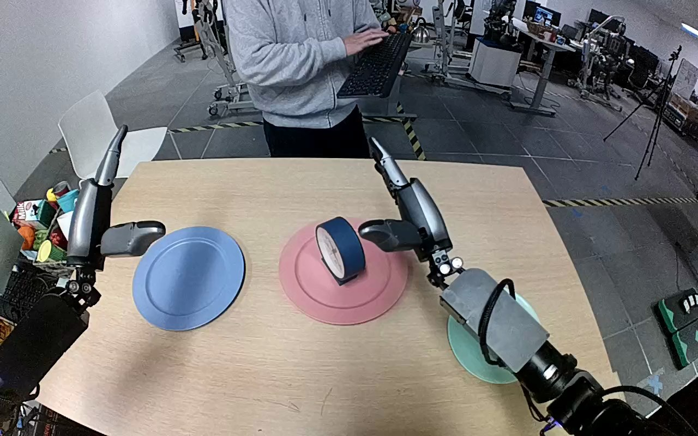

NVIDIA GR1 · 65
Video 65

Visual review action_review.json
{
"prompt_protocol": "humanoid_action_v1",
"prompt_provenance": "visually_authored_from_video_and_initial_frame",
"reviewed_contact_sheets": [
"sheet_001.jpg"
],
"inspected_frame_stride": 2,
"inspected_sampled_frame_count": 60,
"initial_scene": "A dark blue, white-faced clock stands upright on the central pink plate. The light green target plate is on the robot right; the blue plate on the left is empty. Both robot forearms enter from the near camera side. A person across the table holds a keyboard but does not interact with the clock or hands.",
"observed_sequence": [
{
"start_frame": 0,
"end_frame": 19,
"action": "The right arm moves its open hand inward from above the green plate toward the clock on the pink plate. The left hand remains raised and open above the left side of the table.",
"confidence": "high"
},
{
"start_frame": 20,
"end_frame": 47,
"action": "The right hand surrounds the clock casing, lowering its fingers to opposite sides as the clock remains on the pink plate.",
"confidence": "high"
},
{
"start_frame": 48,
"end_frame": 61,
"action": "The right fingers close around the casing and begin lifting; the clock becomes firmly held and rises away from its initial support.",
"confidence": "high"
},
{
"start_frame": 62,
"end_frame": 85,
"action": "The right arm lifts the clock clear of the pink plate and carries it rightward over the green plate, adjusting the held clock toward upright. The left hand supplies no support.",
"confidence": "high"
},
{
"start_frame": 86,
"end_frame": 97,
"action": "The right arm lowers the upright clock into the green plate area. Its lower base and the exact support contact are partly hidden by the hand.",
"confidence": "high"
},
{
"start_frame": 98,
"end_frame": 119,
"action": "The clock remains upright in the green plate area. The right fingers begin opening at the ending while the hand stays close around its lower sides; no subsequent withdrawal or independently unsupported state is shown.",
"confidence": "high"
}
],
"arm_hand_roles": {
"right": "Sole manipulating hand: surrounds and grasps the clock casing, lifts it from the pink plate, transports it to the green plate, lowers it upright and opens the fingers at the ending.",
"left": "Open and raised over the left table area, with slight incidental motion; does not touch the clock or support the manipulation.",
"coordination": "Single-hand task; no hand-to-hand transfer or person interaction."
},
"anatomical_side_evidence": {
"description": "The initial camera looks forward from the robot side of the table: two forearms extend away from the near lower corners in parallel. The manipulating forearm enters from the robot-side lower right, and its thumb lies on the inward side toward the other arm; the opposite hand is the mirrored left hand. This egocentric paired-arm arrangement supports robot-relative right, consistent with the original instruction.",
"confidence": "medium",
"limitation": "Shoulders and torso attachment are outside the camera view, so anatomical naming relies on the visible paired-arm and thumb arrangement rather than direct shoulder visibility."
},
"evidence_frame_indices": [
0,
20,
48,
68,
86,
98,
108,
114,
119
],
"inspection_coverage": {
"contact_sheet": "All 60 every-second-frame thumbnails from frame 0 through 118 visually viewed.",
"native_source_initial_png": true,
"native_transition_and_final_frames": [
20,
48,
68,
86,
98,
108,
114,
119
]
},
"terminal_state": "The blue clock is upright in the green plate area. The right hand has opened its fingers but remains closely alongside the clock; the left hand remains open away from it. The lower clock base is partly obscured, and the clip provides no clear withdrawn-hand confirmation of independent support.",
"uncertainties": [
"The clock base/plate contact is partly occluded by the right hand. Complete release and independently supported placement cannot be confirmed because the hand remains beside the clock through frame 119.",
"The torso and shoulders are outside the image; robot-relative right is supported by the forward-facing paired forearms and inward thumb arrangement, rather than a visible shoulder attachment."
],
"annotation_discrepancies": [],
"selected_execution_status": "uncertain",
"selected_execution_status_reason": "Grasp and transport to the intended plate are clearly observed, but final independent support after release is not established.",
"video_id": "65",
"dataset": "NVIDIA_GR1_100",
"dedicated_review_agent": "review_gr1_65",
"review_source_video": "NVIDIA_GR1_100/65/original/original.mp4",
"source_frame_count": 120,
"source_fps": 20.0,
"native_detail_frames": [
20,
48,
68,
86,
98,
108,
114,
119
],
"world_model_prompt": "The robot closes its right hand around the dark blue clock on the pink plate and lifts it clear. It carries the clock to the light green plate, lowers it upright, and opens its fingers with the hand still alongside the clock. Keep the camera fixed; preserve robot geometry, physically valid joint motion, and normal gripper opening and closing.",
"original_task_instruction": "Use the right hand to pick up dark blue clock from light red plate to light green plate.",
"selected_segment": {
"start_frame": 0,
"end_frame_exclusive": 120,
"reason": "Complete original single-task reference; no cropping or trimming requested."
},
"source_video_sha256": "93d2df4796d5ff81ea2dc661c23b40edaff4be2fe4a598b83358ca7123e4d442",
"review_completed_at": "2026-10-13T18:24:08.581845+00:00"
}